Dual-Fisheye Still Image
By using plug-in technology, you can improve the user experience for your customers. One example is to reduce the time between still image shots. The RICOH THETA S requires approximately 8 seconds between shots. The RICOH THETA V reduced this time to 4 seconds. The dual-fisheye plug-in reduces the time between shots to less than a second.
The reduction in time is achieved by delaying the process of converting dual-fisheye images into a single equirectangular image inside the camera.
This is useful for the following applications:
- HDR - High Dynamic Range Imaging - photography technique that stores luminosity along with color
- Tone mapping of images to reduce the constrast ratio of an entire image and retain local contrast
- Visual Special Effects, VR, and computer game 3D model scenes to get directional lighting information of a scene
- Timelapse
- High volume pictures such as taking 1,000 images at a large construction site
- Factory or workflow optimization (Taking pictures of an assembly line or other process involving people moving items)
Concepts Covered
- Image stitching control
- Permission setting to access storage and camera
- Post-production workflow
- Conversion of dual-fisheye to equirectangular
- High Dynamic Range Imaging
Install apk from Source
Requirements
Tested with THETA V firmware 2.40.2
Known Issues
This is a simplified plug-in example with limited error checking. This example is sensitive to the duration of button presses.
- If you press the plug-in mode button for too long or too short, the plug-in may crash
- If you press the Wi-Fi button for too long to change from single to multi-shot mode, the application may crash
- If you press the shutter button for too long when you take the picture or pictures, the application may crash
Download GitHub Repository
Clone or download the GitHub repository for this tutorial.
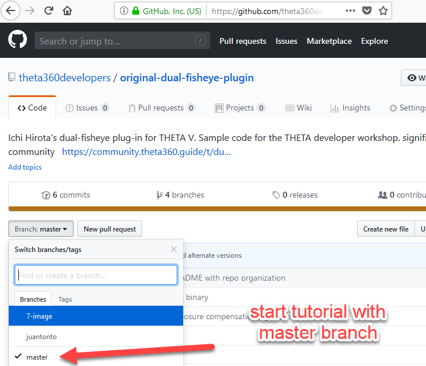
Repository Organization
/apk/app-debug.apk - binary to install in the RICOH THETA V
/tools/stitcher/MiSphereConverter_for_THETAV.apk - mobile stitching application for your Android phone
/app/src/main/java/com/theta360/pluginapplication/MainActivity.java - main plug-in source code
TIP: If you want to use the plug-in first and do not want to download the source, an updated apk was released on August 6, 2018. You can download the apk only. This version is not the same as the apk in the GitHub repository.
Open Android Project
File -> Open
Build apk
Build -> Build APK(s)

NOTE: If the build fails, you can continue with the tutorial using the binary apk provided
Locate apk
Use adb to install apk
Connect your THETA V to your workstation with a USB cable.
cd into the directory that your apk is in.
adb install -r app-debug.apk
NOTE: If you've previously installed the THETA Plug-in SDK apk, you must first uninstall the SDK plug-in from the THETA. If adb does not detect your camera, unplug the camera and plug it back in. If the camera is still not detected, verify that your camera is unlocked. You must join the partner program to unlock your camera.
Use Vysor to set apk permissions
Start Vysor

Select Apps in Settings
Scroll down until you see apps.

Select Plugin Application

In App Info select Permissions
Enable Camera and Storage

Reboot Camera and Put Into Plug-in Mode
- Unplug camera
- Hold power button for 8 seconds
- Turn camera back on
- Hold Mode button for 2 seconds or longer
- Confirm that that the LED above the shutter button is white
- Wi-Fi LED below shutter will be aqua color and flashing
Taking Pictures
The camera has two modes by default. It can either take a single dual-fisheye image or take three dual-fisheye pictures in rapid succession for bracketing. You can switch between single image and bracketing mode by pressing the Wi-Fi button on the side of the camera. This must be a short press of less than 2 seconds.
Single Image
In single image mode. the Wi-Fi LED will be aqua and flashing.

3 Shot Mode
Press the Wi-Fi button on the side of the camera to get the camera into 3 shot mode.
WARNING: If you press the Wi-Fi button for more than a second, the plug-in may not work properly. Press the Wi-Fi button on the side of the camera firmly and release it quickly.
In 3 shot mode, the Wi-Fi LED will be magenta and flashing faster compared to when the camera is in still image mode.

The gif below was contributed by community member @juantonto.
For 3 shot mode, you need to stabilize the camera for the duration of the three shots. Place the camera on tripod or stand it up on a table.
Press the shutter button. This must be a short press of less than 2 seconds.
Refer to the video above for the expected behavior of the camera, including LED and audio feedback.
Confirm pictures were taken
Connect camera to your computer with a USB cable.
In a file browser such as File Explorer, click into RICOH THETA V in
the same process you use for a normal camera or storage device.
Go into DCIM/100RICOH. You will see the dual-fisheye images with
filenames that contain a date and time stamp.

Stitching Dual-fisheye Images Into Equirectangular
For most applications, you will need to stitch the images in post-production processing using your own stitching library. For this tutorial, we will use a few commercial products to stitch the dual-fisheye image into equirectangular. Third-party stitching libraries do not have the lens parameter information from Ricoh and thus require manual callibration for each camera. Ricoh does not make the lens parameter information available.
Android Phone Stitching Application
Ichi Hirota has produced a stitching library and Android mobile phone app that requires a one-time callibration for each camera. A trial version of the mobile app apk is available in the GitHub repository you downloaded for this tutorial. It is under the directory tools/stitcher. This trial version of the app has a watermark.
You can commercially license Ichi's stitching library and Android application. For more information on licensing Ichi's stitching library and Android application, please contact Jesse Casman at jcasman@oppkey.com.
If you prefer to use a desktop application, you can use PTGui. The guide to use PTGui to stitch the image is provided at the end of this article.
Original Dual-fisheye Image

Callibration Application

Dual-fisheye image loaded into callibration app.
The lens distortion is compensated for by selecting points on the edges of the spheres. This is a one time process. The lens distortion information is then stored in the mobile app.

When you select the points of overlap, the callibration app will present a zoom view so that you can precisely select the overlap. In the view below, we're using the tree branch as the callibration point.

HDR is handled by the application.

Stitching Results

Close-Up on Stitch Line
Viewed using the Ricoh Desktop Appplication


HDR - Blending 3 Shots into Single Image
You can use Picturenaut from HDR Labs to combine the 3 images into a single image.

Picturenaut outputs a TIFF file. I converted this to jpeg using another graphics program called GIMP.

I then used PTGui to stitch the dual-fisheye to equirectangular.


Modify Code to Take 7 Images
Let's modify the code to take 7 pictures with 7 different exposure compensation values:
-2.0, -1.3, -0.7, 0.0, 0.7, 1.3, 2.0
Here is an example output:

Benefits
Basic information on High Dynamic Range Imaging (HDRi) is available on Wikipedia.
This image shows some of the benefits.

HDRi is also commonly used in the digital graphics industry. The graphic below from the Unity HDRI view documentation will give you a feel for how HDRI can help with lighting and perspective.

Steps
If you prefer to read through the modifications and follow along, the modified code is in the 7-image branch of the repository.
1. Open MainActivity.java
Under app/java/com.theta360.pluginapplication, locate MainActivity.

2. Add Variables for NumberOfImages and for ExposureCompensationValue
In MainActivity.java, add an integer variable called numberOfImages and set the value to 7. Note the second variable for ExposureCompensationValue that is set the value to -6. Later in the tutorial, we will use this variable to move the exposure compensation from -6 to +6.

3. Reset Bracket Count and exposureCompensationValue
At roughly line 175, reset the variable bcnt to the numberOfImages.
Set exposureCompensationValue to -6. Set bcnt to numberOfImages.
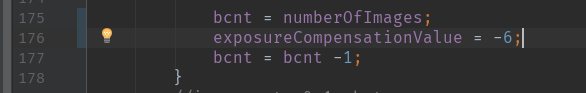
Note that in the example above, RIC_EXPOSURE_MODE is set to RicAutoExposureP for the EV compensation to take effect. The current Camera API documentation indicates that only RicAutoExposureT, RicAutoExposureP, or RicAutoExposureWDR can set exposure compensation.
In single shot mode, the exposureCompensation will be zero.

If you have any problems following this example, you can also copy and paste the relevant sections from the completed file on GitHub, 7-image branch.
4. Locate nextShutter()
At roughly line 203, identify the section for nextShutter()

5. Locate bracket section
At roughly line 211, look for the line if(bcnt > 0).
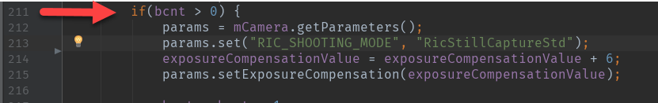
The code after the else statement handles single shot mode.
6. Review Exposure Compensation API
We will adjust the exposure compensation value for every image in our 7 image set. Before modifying the code, let's look at the options the API provides for adjustment.
RICOH Camera API for exposure compensation is available at:
https://api.ricoh/docs/theta-plugin-reference/camera-api/

7. Adjust Exposure Compensation
We will start the exposure compensation value at -6 and adjust it up by 2 for each image. With 7 images, this value will be changed with these values for each image: -6, -4, -2, 0, 2, 4, 6.
At the top of the code, we set the variable ExposureCompensationValue to -6 in step
2 of this tutorial. The first time through the loop, the line
params.setExposureCompensation(ExposureCompensationValue) will pass the value -6,
which corresponds to to a -2 adjustment. We increment ExposureCompensationValue by 2.
The next time through the loop, ExposureCompensationValue will be -4, which corresponds
to an adjustment of -1.3.
The code for setting exposure compensation is shown below.
if(bcnt > 0) {
params = mCamera.getParameters();
params.set("RIC_SHOOTING_MODE", "RicStillCaptureStd");
exposureCompensationValue = exposureCompensationValue + 2;
params.setExposureCompensation(exposureCompensationValue);
bcnt = bcnt - 1;
mCamera.setParameters(params);
Intent intent = new Intent("com.theta360.plugin.ACTION_AUDIO_SHUTTER");
sendBroadcast(intent);
mCamera.takePicture(null, null, null, pictureListener);
}
else{
The EV of the images can be seen in this screenshot from Photoshop HDR Pro:
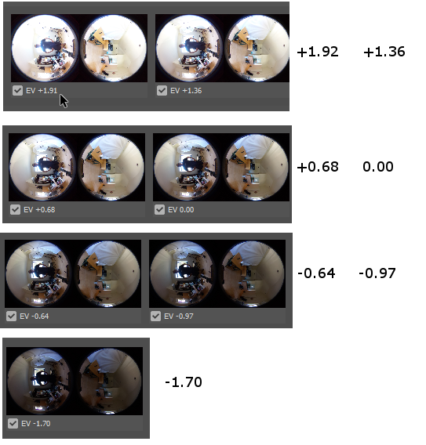
8. Build and Install
Build the apk. Before installing the apk, you must manually delete the existing Plugin Application from your camera.
Follow this process:
- Save your project, File -> Save All
- Build apk in Android Studio
- Use Vysor or the Ricoh desktop app to uninstall the existing plug-in application
- Use adb install -r app-debug.apk to install the new apk you just built
- Use Vysor to set the permissions of the plug-in to give access to Camera and Storage
9. Stitch Dual-fisheye Images into Equirectangular
Use Ichi Hirota's mobile app for the stitching. The app can batch process all 7 images with a single command. After you process them on your Android phone, you need to transfer the files to your desktop computer using a USB cable.
If you do not have an Android phone, use PTGui on a Windows or Mac laptop. Information on using PTGui is included at the end of this tutorial in the reference section.

10. Create Single HDR Image
Use Picturenaut to merge the 7 images into a single HDR image.

HDRi files are stored in one of three formats: Radiance RGBE, OpenEXR, or Floating point TIFF/PSD.

The file is 96 MB.
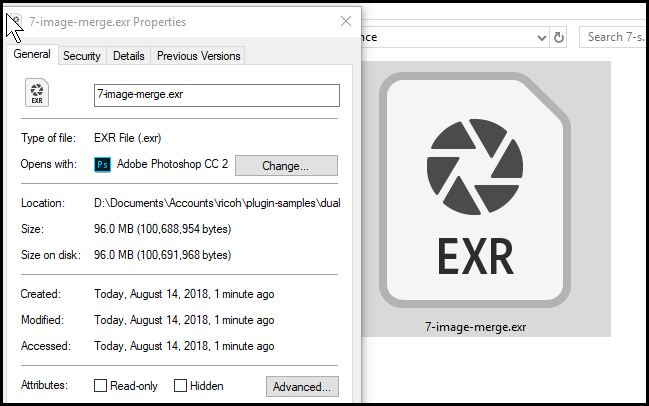
If you have Photoshop, you can also use HDR Pro to create HDRI files.
Congratulations! You've completed the dual-fisheye tutorial!
References and Resources
Turning off THETA V Stitching
Still images can be saved as dual-fisheye by adjusting the stitching parameter.
mParameters.set("RIC_PROC_STITCHING_TYPE", "RicNonStitching");
The size of the dual-fish image is 5792x2896. Use the command below:
mParameters.setPictureSize(5792, 2896);
The picture below is from Ichi Hirota.


This article provides more information on a plug-in built by community developer Ichi Hirota.
Here's example code from Ichi Hirota.

Stitching with Post-Shoot Tools
Instead of stitching the dual-fisheye image inside of the camera, you will need to use tools on your PC to convert the dual-fisheye image into equirectangular.
PTGui
Community member Svendus has reported success stitching hundreds of spheres on PC and Mac using PTGui 11.2. A free trial version is available.
This project file bundle has both a preset for THETA images as well as an example image.
Original Image

Stitched Image

Close-up Image
Using the THETA Desktop Application to view the stitched image.

Other Stitching Solutions
Community member @squizard360 is experimenting with Hugin and the dualfisheye2equirectangular_ffmpeg_remap project from evertvorster.
HDR with Photoshop
Photoshop can input all 7 images and create HDR images with HDR Pro.
With all 7 stitched images in a folder, go to File -> Automate -> Merge to HDR Pro....
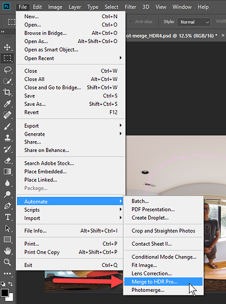
Select the folder. All 7 images will load. Each image will retain different EV values.

There are different ways to edit the image. In the example below, I am using Adobe Camera Raw (ACR) in 32 bit format.
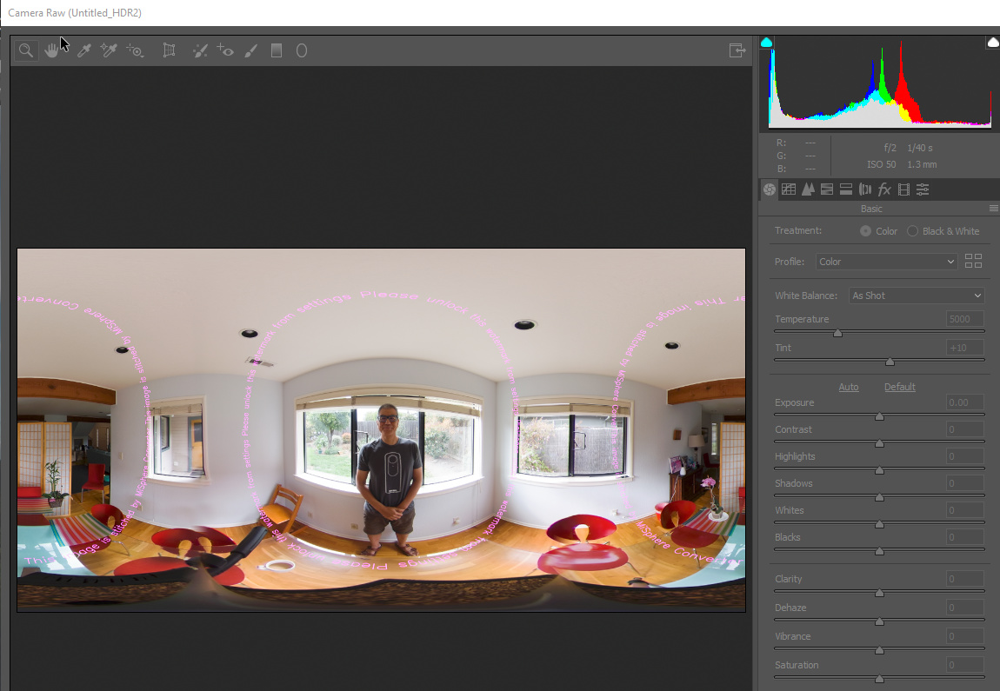

You can now export to jpg and view it in the RICOH THETA Desktop application.
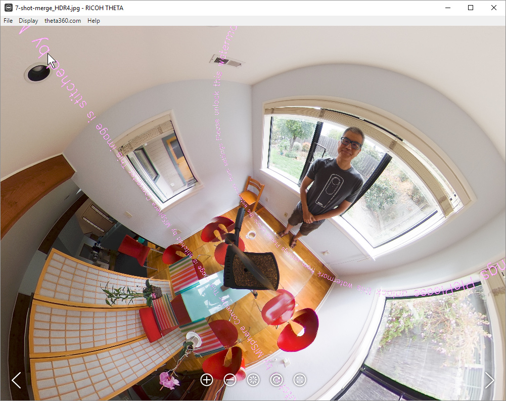
Export to OpenEXR and Radiance file formats
If you want to use your HDRI file with external software such as Unity for use in 3D model lighting effects, you should save the file as OpenEXR or Radiance, not JPEG.
Here is the workflow:
Inside of the HDR Pro tool shown the previous step, select 32 Bit mode. Uncheck Complete Toning in Adobe Camera Raw.
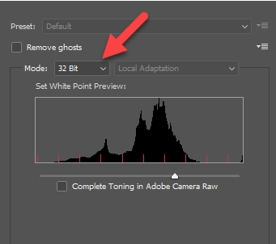
Press OK on HDR Pro. You will be back in Photoshop. From the File menu, select Save As....
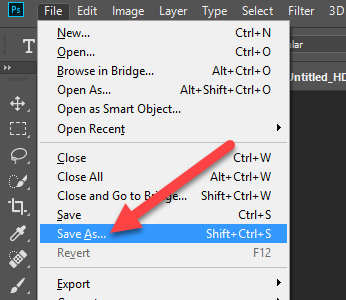
You will now see the options to save as Radiance and OpenEXR formats.

Save the files on your local computer. You can now import the files into another program such as Unity.
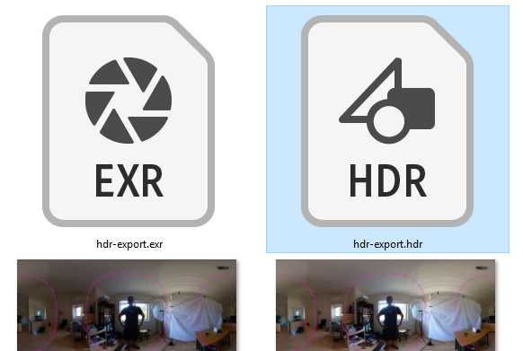
The Radiance and OpenEXR files will be much larger than the JPG images. Each original JPG image was approximately 3.3 MB.
The HDR files are around 45 MB.
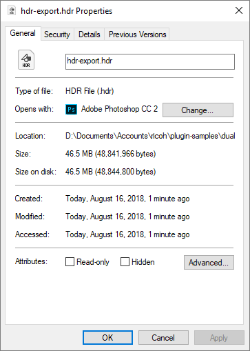
Both Radiance and OpenEXR have similar file sizes.

THETA 7 Image HDR With Unity Look Dev View HDRI
Unity has a Look Dev tool that is used to check different assets for lighting conditions. With Look Dev you can look at two different assets in different views.

To get started, drag the EXR file onto Unity.
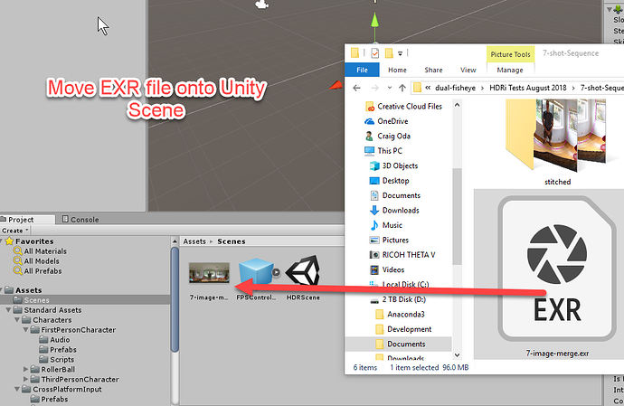
You next need to use the HDRI asset to create a material that you can apply to a 3D object such as the skybox or a sphere.
Unity recommends Specular Convolution.

It does blur the skybox. Disabling Specular Convolution will result in a normal-looking image in the Skybox. The Texture Shape needs to be Cube. Hit Apply.
On my 6-core i7 with 32GB RAM, it took a few minutes.
Here's a horizontal comparison view inside of Look Dev View HDRI.

HDRI Light Reflection in Unity Projects
Brad Herman has an excellent video showing RICOH THETA images from an older camera being used in Unity 5.

I also did some simple tests in Unity to show the light reflection from the HDR files produced from the THETA images used in this tutorial. The shiny part of the sphere and car is the light reflected from the window that I'm standing behind or the window to my side. I am not using a separate directional light source inside the Unity scene.


Here's some screenshots from professional VFX designer and artist Sam Winkler.
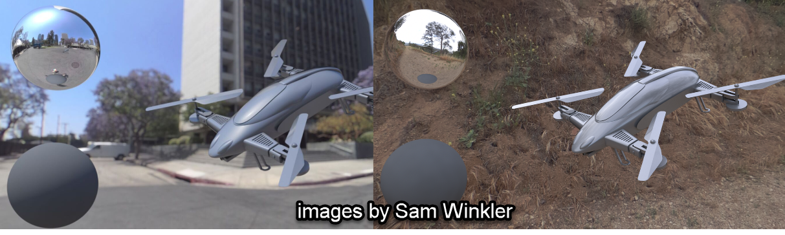